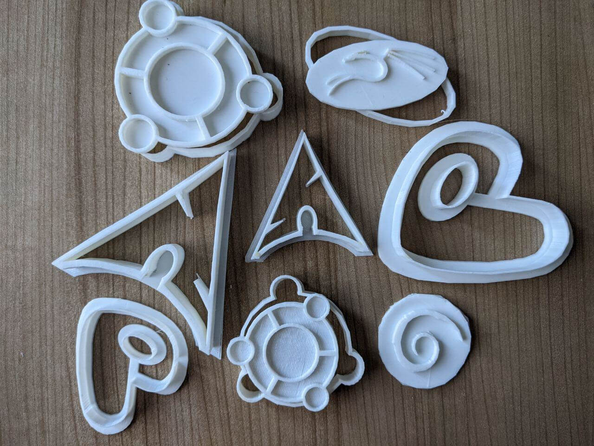
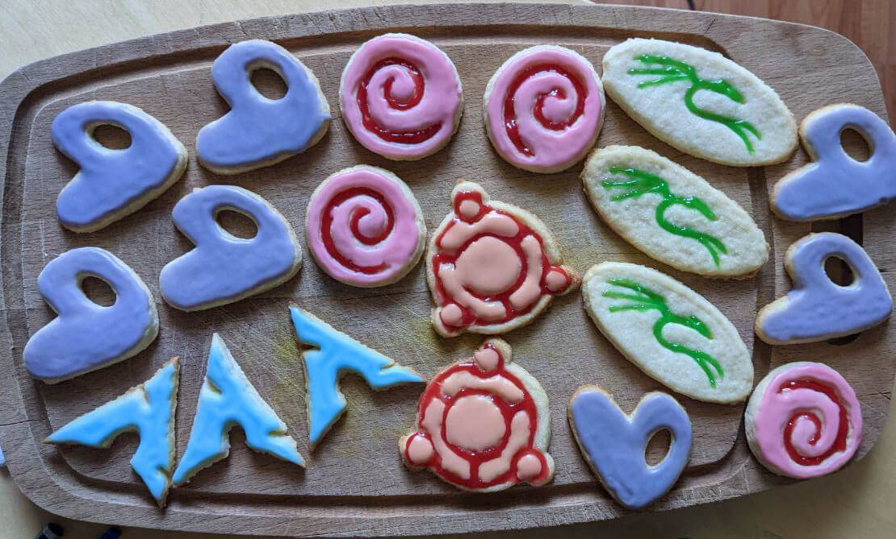
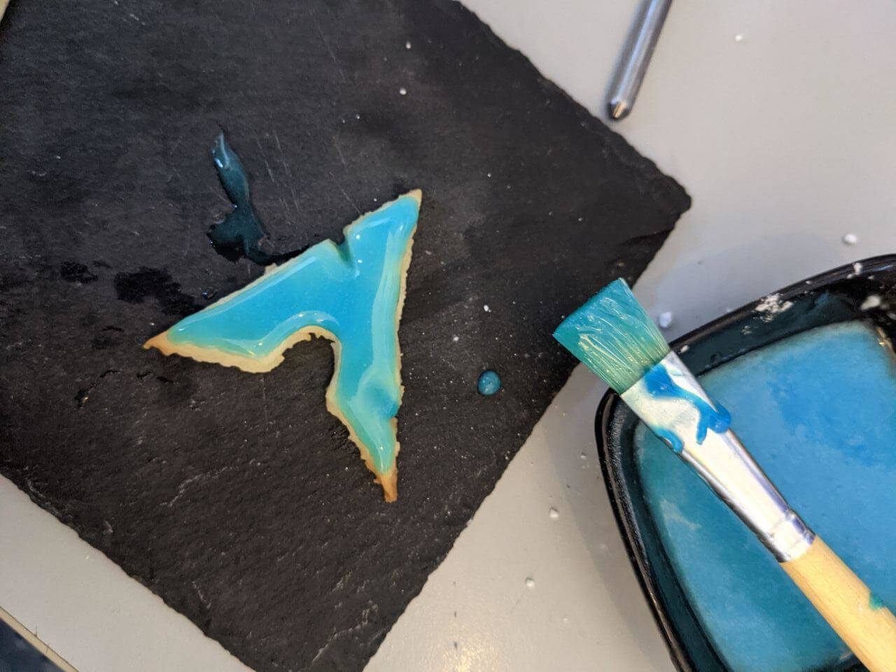
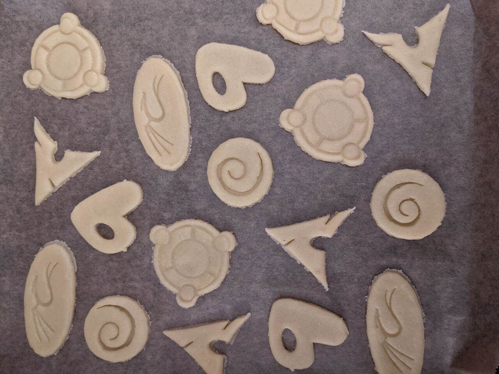
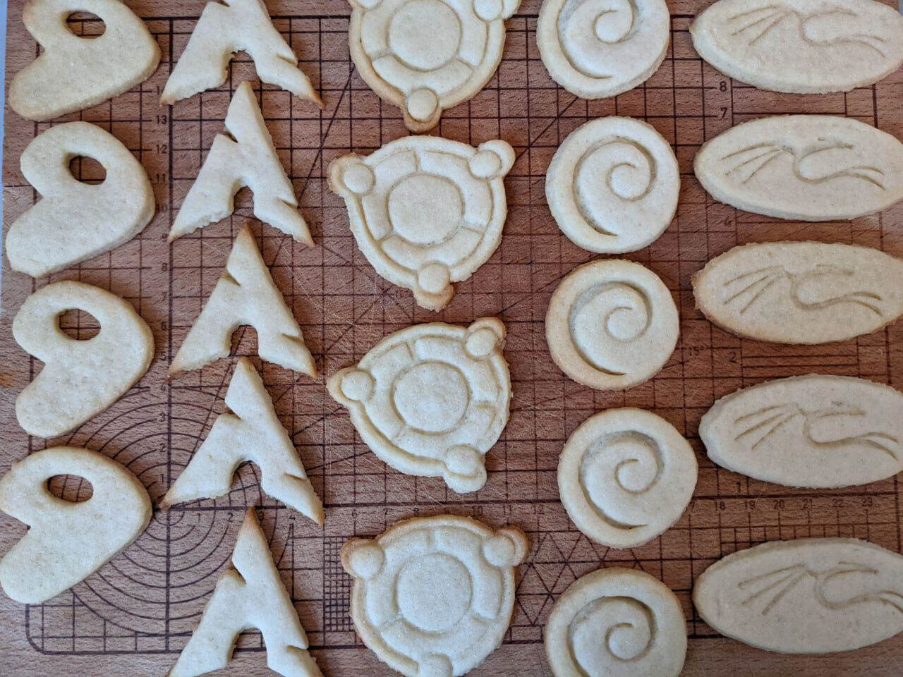

Linux Cookies

If you're in a hurry and just came for the STLs, here you are:
Linux Cookie Cutters on Github
Please keep in mind that they're just prototypes and need improvement! You'll keep pretty and (depending on your baking skills) tasty cookies with them, but I still need to optimise them to need less filament, make them easier to clean etc. (Expect Linux Cookie Cutters v2 in about a week ;))
Installation Instructions

Note: it's just meant as a joke, linux-cookies are not part of any official package repositories ;)
Arch Cookie Installation

First install the necessary dependencies:
pacman -S flour butter sugar eggs
Most systems have the kitchen server already installed, if not install the following utilities as well:
pacman -S kitchen-oven kitchen-bowl kitchen-scale
And if you want some niceties like an icing bag:
pacman -S kitchen-extra
Then configure oven, bowl and scale settings in the corresponding configuration files:
echo "unit = celsius" >> /etc/kitchen/oven
echo "size = big" >> /etc/kitchen/bowl
echo "unit = gram" >> /etc/kitchen/scale
Finally, install the arch-cookie package:
pacman -S arch-cookies
You'll get slim and fast cookies without unnecessary bloat that taste exactly as you want them to taste, your system (body) won't gain a single gram in weight from them.
Gentoo Installation

In Gentoo packages are compiled from source. Go to the next field and harvest some wheat for your flour, find some chicken for eggs and get a cow for butter.
As soon as you collected the ingredients, prepare your system:
First enable ingredient support in the kernel, do make menuconfig and apply the following changes:
Kernel Hacking --->
Cookie Options --->
<*> Enable fuzzy flour
<*> Force extended sugar
Then setup the kernel for baking support:
Device Drivers --->
Baking support --->
Baking Devices --->
<*> Oven Support
<*> Bowl Support
<*> Scale Support
Save and exit from the configuration and rebuild the kernel:
make -j $(nproc)
make modules_install
make install
This will take a while. After installation finishes reboot your system.
Then set the right variables for oven and scale in /etc/portage/make.conf, which value you need depends on your oven and scale manufacturers.
An example configuration for a Siemens oven and a Wmf scale:
OVEN_TYPE="siemens"
SCALE_TYPE="wmf"
Afterwards set your USE flags. Available USE flags for gentoo-cookies:
Local USE flags:
- vanilla for vanilla flavour
- chocolate for chocolate flavour
- cinnamon for cinnamon flavour
- wheat for wheat flour
- spelt for spelt flour
- offensive, warning: changes your cookies to offensive shapes
Global USE flags:
- vegan for vegan cookies
For example to enable vanilla flavour do:
echo "linux-cookies/gentoo-cookies vanilla" >> /etc/portage/package.use/gentoo-cookies
When you're done with the setup install /linux-cookies/gentoo-cookies:
emerge --ask linux-cookies/gentoo-cookies
Configure the kitchen-utilities as described in the Arch section and after only 6h you're done.
You'll get fast and tiny cookies that are fine-tuned for your system (body), your digestion will run faster than ever before and you'll probably even lose package weight with them.
Ubuntu/Kali/Debian Installation

Open a terminal and type
sudo apt-get install linux-cookies
The package comes bundled with all necessary (and unnecessary) dependencies as well as the kitchen utilities.
The resulting cookies will be a full fat version: they'll contain lots of stuff you'll never need but they're done very fast. Your system gains at least 1000g package weight.
Cookie Source Code
The source code is written in C to make the baking process as fast as possible ;)
Again, just a joke, the code is written to look like and be used as a cookie recipe, not so much to make sense.
If you run linux-cookies, it'll guide you through the baking process step by step.
#include <stdio.h>
#include <string.h>
#include <stdlib.h>
#include <time.h>
#include <unistd.h>
typedef struct {
int temperature;
char mode[30];
} Oven;
typedef struct {
char name[20];
int amount;
char unit[5];
} Ingredient;
typedef struct {
int cookie_number;
char cookie_type[20];
} Cookie_Sheet;
void set_oven_temperature(Oven, int, char*);
void mix_ingredients(Ingredient*, int);
void divide_dough();
void form_ball(int);
void cool(char*, int);
void roll_out_dough(double);
void cut_into_shapes(char *);
void add_cookies(Cookie_Sheet, char*, int);
void bake(int);
void clear_sheet(Cookie_Sheet);
void eat();
void wait_for_enter();
int main() {
// initialise to zero because...we have no cookies when we start
int num_cookies = 0;
int dough = 0;
int num_dough_ingredients = 4;
// prepare the following list of ingredients for the dough
Ingredient dough_ingredients[4] = {{"flour", 1000, "g"},
{"butter", 500, "g"},
{"sugar", 400, "g"},
{"eggs", 2, "pc"}};
// prepare a bowl that's big enough to hold all the ingredients
Ingredient* dough_bowl = malloc(num_dough_ingredients * sizeof *dough_bowl);
// the initial heat of my oven is 20 degrees celcius, no mode is set
Oven myOven = {20, "none"};
// preheat the oven to 175 degree
printf("Step 1:\n");
set_oven_temperature(myOven, 175, "upper_lower_heat");
// put the ingredients into the bowl
printf("Step 2:\n");
for (int i = 0; i < num_dough_ingredients; i++) {
dough_bowl[i] = dough_ingredients[i];
printf("Add %d %s of %s into the bowl.\n", dough_ingredients[i].amount,
dough_ingredients[i].unit,
dough_ingredients[i].name);
wait_for_enter();
}
printf("\n");
// mix them
printf("Step 3:\n");
mix_ingredients(dough_bowl, num_dough_ingredients);
// set dough flag to 1, we have dough now
dough = 1;
// divide the dough into 4 pieces and form balls
printf("Step 4:\n");
for (int i = 0; i < 4; i++) {
divide_dough();
form_ball(i + 1);
}
printf("\n");
// cool the dough for 60min
printf("Step 5:\n");
cool("dough", 60);
// Prepare a cookie sheet
Cookie_Sheet cookie_sheet = {0};
// Roll out the dough 0.5cm thick
printf("Step 6:\n");
roll_out_dough(0.5);
// set all cookie types to 0 because we have none yet
int arch_cookie = 0;
int gentoo_cookie = 0;
int debian_cookie = 0;
int ubuntu_cookie = 0;
int kali_cookie = 0;
// loop as long as we have dough and energy to bake,
// this should be 100 cookies
// note: sometimes a bug occurs: there's dough left after 100 cookies
// in this case you can forcefully set the dough flag to 0 by eating the rest
// side effects of this hack: nausea and diarrhea on older systems
printf("Step 7:\n");
while (dough) {
if (num_cookies < 20) {
cut_into_shapes("arch");
add_cookies(cookie_sheet, "arch", num_cookies + 1);
wait_for_enter();
arch_cookie++;
if (arch_cookie == 20) {
bake(480);
clear_sheet(cookie_sheet);
}
}
else if (num_cookies < 40) {
cut_into_shapes("gentoo");
add_cookies(cookie_sheet, "gentoo", num_cookies - 20 + 1);
wait_for_enter();
gentoo_cookie++;
if (gentoo_cookie == 20) {
bake(540);
clear_sheet(cookie_sheet);
}
}
else if (num_cookies < 60) {
cut_into_shapes("debian");
add_cookies(cookie_sheet, "debian", num_cookies - 40 + 1);
wait_for_enter();
debian_cookie++;
if (debian_cookie == 20) {
bake(600);
clear_sheet(cookie_sheet);
}
}
else if (num_cookies < 80) {
cut_into_shapes("ubuntu");
add_cookies(cookie_sheet, "ubuntu", num_cookies - 60 + 1);
wait_for_enter();
ubuntu_cookie++;
if (ubuntu_cookie == 20) {
bake(540);
clear_sheet(cookie_sheet);
}
}
else {
cut_into_shapes("kali");
add_cookies(cookie_sheet, "kali", num_cookies - 80 + 1);
wait_for_enter();
kali_cookie++;
if (kali_cookie == 20) {
bake(480);
clear_sheet(cookie_sheet);
}
}
num_cookies++;
if (num_cookies == 100) {
dough = 0;
printf("\n");
}
}
// Cool cookies for 60min
printf("Step 8:\n");
cool("cookies", 60);
printf("Step 9: Guten Appetit.\n");
eat();
}
void set_oven_temperature(Oven oven, int temperature, char *mode)
{
oven.temperature = temperature;
strcpy(oven.mode, mode);
printf("Set oven temperature to %d %s.\n", temperature, mode);
wait_for_enter();
printf("\n");
}
void mix_ingredients(Ingredient bowl[], int num_ingredients)
{
int i, j = 0;
Ingredient temp = {"", 0, ""};
srand(time(NULL));
for (i = 0; i < num_ingredients; i++) {
j = rand() % num_ingredients;
temp = bowl[i];
bowl[i] = bowl[j];
bowl[j] = temp;
printf("Mix, mix, mix...\n");
}
wait_for_enter();
printf("\n");
}
void divide_dough() {
printf("Divide the dough.\n");
}
void form_ball(int number) {
printf("Form ball number %d from dough.\n", number);
wait_for_enter();
}
void cool(char *name, int time) {
printf("Cool %s for at least %d minutes.\n", name, time);
wait_for_enter();
printf("\n");
}
void roll_out_dough(double height) {
printf("Roll the dough out to %f cm thick\n", height);
wait_for_enter();
printf("\n");
}
void cut_into_shapes(char *shape) {
if (!(strcmp(shape, "arch"))) {
printf("Cut an %s cookie!\n", shape);
}
else {
printf("Cut a %s cookie!\n", shape);
}
}
void add_cookies(Cookie_Sheet cookie_sheet, char *cookie_type, int number)
{
strcpy(cookie_sheet.cookie_type, cookie_type);
printf("Add %s-cookie number %d to sheet...\n", cookie_type, number);
cookie_sheet.cookie_number++;
}
void bake (int seconds) {
int minutes = seconds / 60;
printf("Put cookies in oven and wait for %d minutes.\n", minutes);
printf("Baking...\n");
sleep(seconds);
printf("\a");
printf("Cookies are done! Get them out of the oven!\n");
printf("Are you ready to continue?\n");
wait_for_enter();
}
void clear_sheet(Cookie_Sheet cookie_sheet) {
cookie_sheet.cookie_number = 0;
strcpy(cookie_sheet.cookie_type, "no_cookies :(");
}
void eat() {
printf("nom nom nom...\n");
printf("\n");
}
void wait_for_enter(){
while (1){
printf("Press ENTER to continue...\n");
char x = getchar();
if (x == '\n' || x == EOF)
break;
}
}